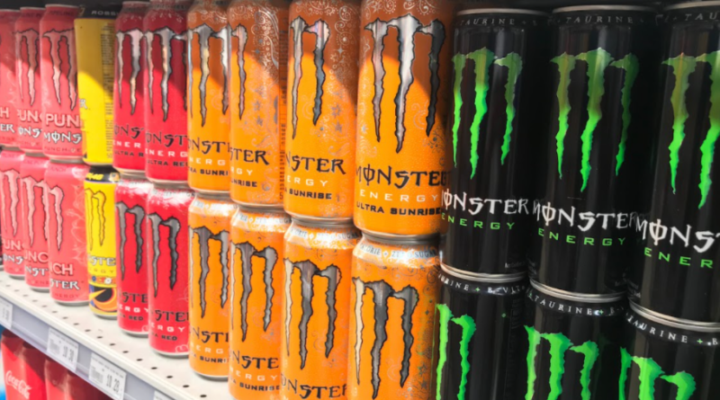

Inleiding
Deze website gaat over Monster, iets specefieker, Monster energy. Op deze pagina vind je allerlei informatie over de drank en waarom het zo populair is geworden
Wat is Monster energy?
Monster Energy is een populaire energiedrank, Het was oorsprokelijk een energiedrank die ook echt voor de energie gedronken werd maar het is in de laatste jaren steeds populairder geworden. Dat is omdat de monster blikjes er leuk uitzien en omdat de monster zelf heel lekker smaakt. Ook door social media en groepsdruk is het populair geworden, "iedereen drinkt het dus ik zou het ook moeten drinken", veel jongeren drinken het gelukkig ook gewoon omdat ze het zelf leuk en lekker vinden.
Soorten Monster energy
Er zijn tientallen en misschien zelfs honderden soorten en smaken monster, alle soorten monster zijn verdeeld in categorien zoals ultra, juiced, punch, en java. Hiervan zijn er nog veel meer maar iedere categorie heeft eigen smaken en eigenschappen. Ultra monster heeft bijvoorbeeld geen suiker en java monster is gebaseerd op koffie.

Geschiedenis
Monster Energy werd opgericht in 2002 in de Verenigde Staten door het bedrijf Hansen Natural Company (dat later zelfs Monster Beverage Corporation ging heten). Het merk viel meteen op door de grote zwarte blikken met het groene “klauw-logo” en door de sterke focus op extreme sporten zoals motocross, skateboarding en autosport. In de jaren daarna groeide Monster razendsnel en werd het één van de grootste energiedrankmerken ter wereld, naast Red Bull. Door slimme sponsoring, opvallende marketing en veel verschillende smaken werd het vooral populair onder jongeren. Tegenwoordig wordt Monster in bijna elk land verkocht en is het een vaste naam in de energydrankwereld.